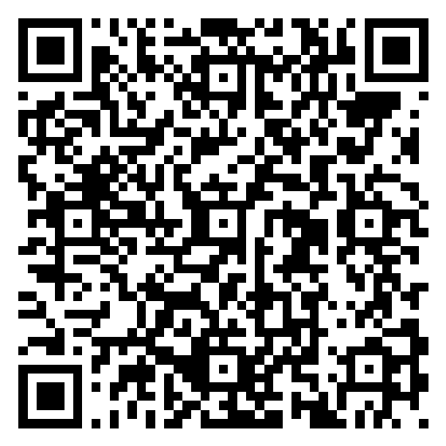
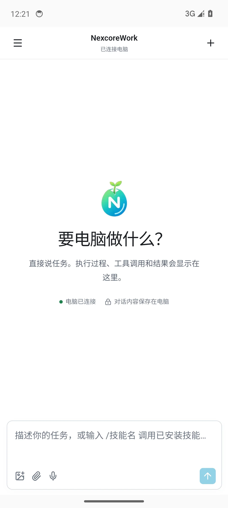
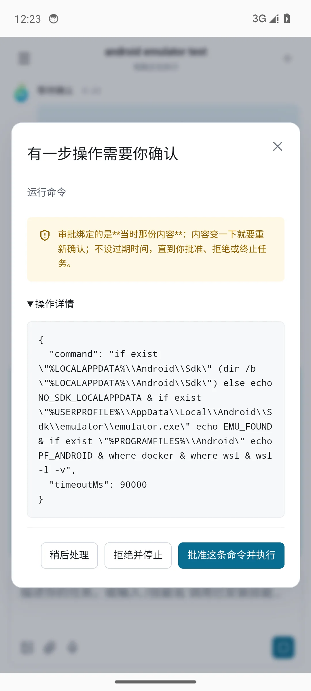
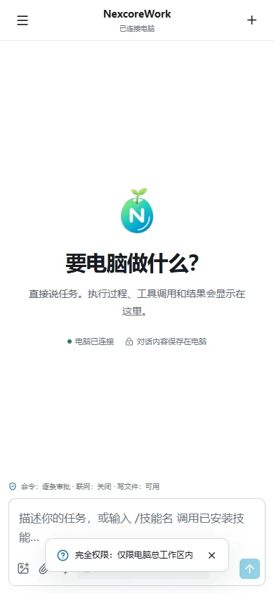
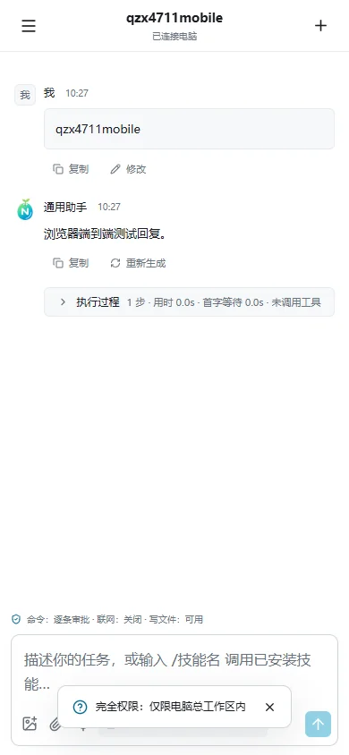

一次性 PSK 与电脑公钥通过二维码交给手机，后续请求全部在加密 WebSocket 内传输。
NEXCOREWORK MOBILE · ANDROID
把电脑工作区，
装进口袋。
手机不是另一套智能体，而是电脑工作台的远程控制面。查看任务、审批操作、读取产物、继续对话，全部通过同一局域网内的 Noise 端到端加密通道完成。
- E2E
- Noise 端到端加密
- LAN
- 任务始终留在电脑
- 30d
- 设备令牌可随时撤销

三步连接
电脑负责执行，
手机负责掌控。
- 01安装并启动电脑端
在 Windows 电脑上运行 NexcoreWork 2.0.0，新建或选择工作区。
- 02手机安装 APK
扫描本页二维码下载，并在 Android 系统里允许本次安装未知来源应用。
- 03扫描电脑连接码
电脑设置 → 手机控制 → 生成配对码，再用 NexcoreWork 手机端内扫描。两端必须在同一局域网。
真实运行截图
更适合手机的操作面。
独立单栏布局、对话菜单、审批、设备权限和二维码配对，不是桌面页面的简单缩小版。




控制权不离开你
端到端加密，
权限由电脑钳制。
即使手机伪造“完全权限”，服务端也只允许电脑总工作区，无法逃逸到整块磁盘。
设备令牌只存摘要，撤销后当前加密连接立即断开，推送订阅同步删除。
模型、SQLite、项目记忆、附件和工具执行都留在电脑端，手机只负责控制与结果展示。
ANDROID 7.0+ · ARM64
手机上继续，
电脑上完成。
建议先安装 Windows 桌面端，再通过电脑端生成一次性连接二维码。
NEXCOREWORK MOBILE2.0.0
下载 APK ↓
当前为可安装的开发签名 APK，不是应用商店发布包。首次安装需在 Android 设置中允许本次安装。